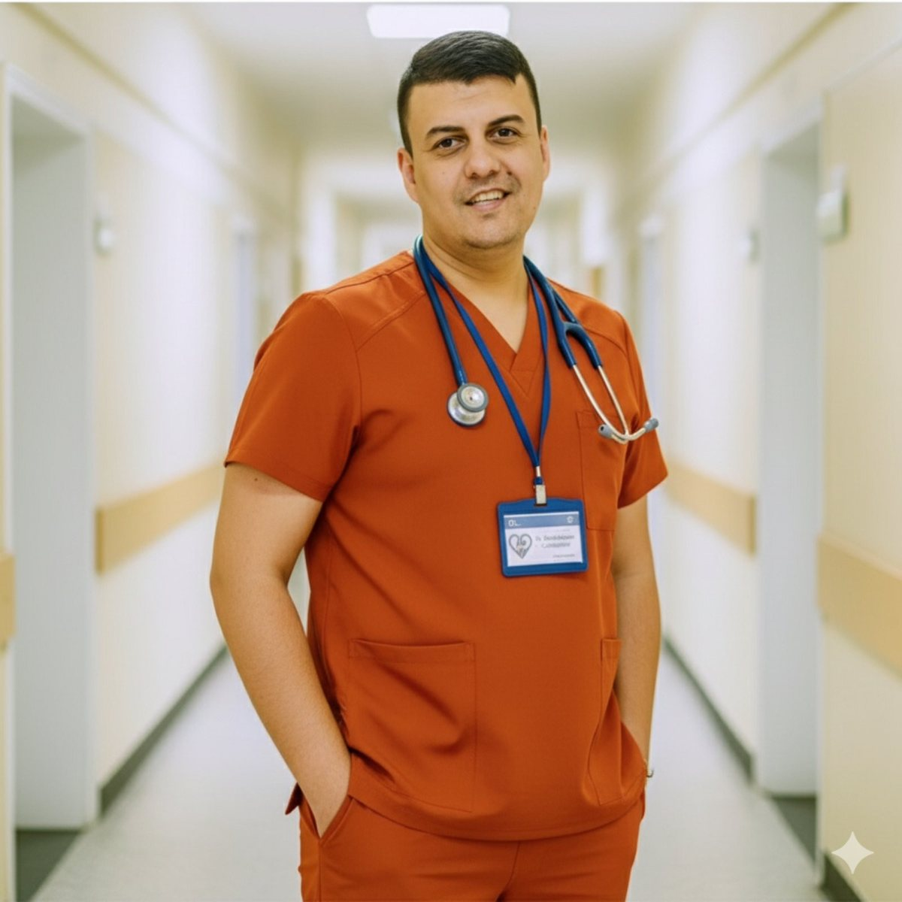

- Приема по НЗОК и платено.
Образование
Завършва Медицински университет София през 2017 г. Специалност Кардиология придобива през 2023 г. след специализация в Клиника по кардиология към УМБАЛ „Св. Анна“ София.
Квалификации
- Член на Български лекарски съюз, Европейско кардиологично дружество и Дружество на кардиолозите в България
- Участие в конгреси и семинари по специалността
Биография
От 2018 г. до 2023 г. работи в Спешно отделение на УМБАЛ „Св. Анна“. От 2019 г. до 2023 г. е лекар специализант по кардиология в Клиника по вътрешни болести към същата болница. От 2023 г. е лекар специалист в Кардиологично отделение на УМБАЛ „Св. Анна“ и преглежда в 28 ДКЦ София.
Поводи за преглед
- Задух и затруднено дишане
- Болка в гърдите
- Сърцебиене
- Отоци на краката
- Отпадналост и умора
- Високо кръвно налягане